Loyly
Sauna and cold plunge rounds.
Submitted to Garmin and waiting for review. The store link appears here once it is approved.
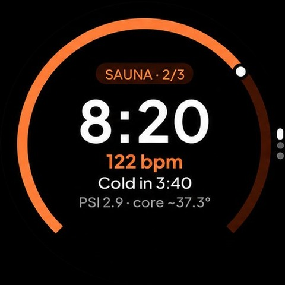
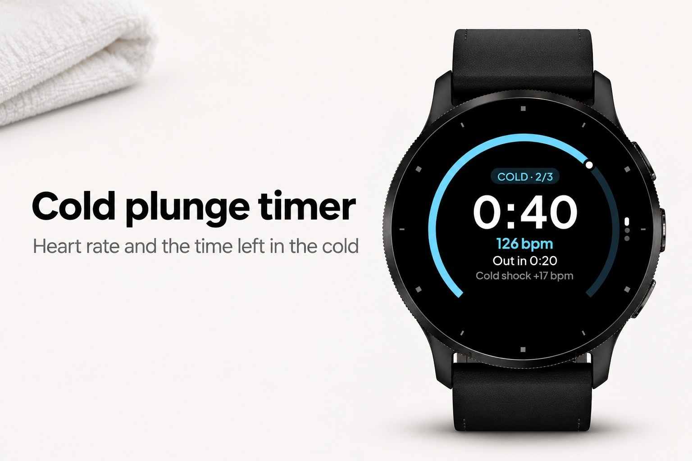
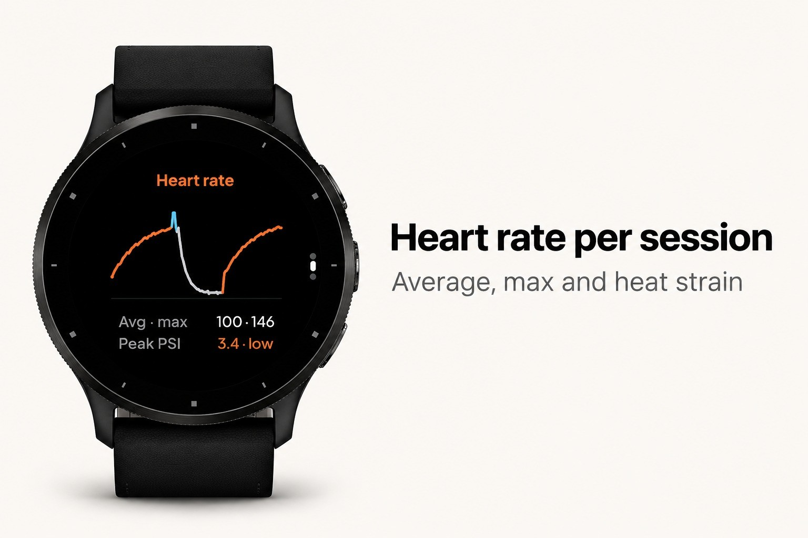
Loyly times sauna, cold plunge and rest in one session, round after round, and works out what the minutes in between mean. Press START to move from heat to cold to rest; the buttons do everything, so wet fingers and a locked touchscreen are no problem. One free app, no subscription.
While you sit in the heat, Loyly estimates your core temperature from your heart rate (the Kalman filter of Buller et al., 2013) and turns it into the Physiological Strain Index from 0 to 10 (Moran et al., 1998). In the rest it fits your heart rate recovery curve and suggests when you are ready for the next round. In the cold it measures your cold shock, the rise in heart rate in the first 30 seconds, and shows how it changes over the weeks. Your weekly minutes of heat and cold are kept against a goal (57 and 11 minutes, from Søberg et al., 2021) with a suggestion for the days that are left.
What it does
Sauna, cold and rest rounds in one session with a plan for rounds and minutes. Start with sauna or with cold. Buzz at the end of each phase and when your heart rate has recovered. Strain index and estimated core temperature live, with an optional buzz at a level you choose. Undo a phase switch with BACK within 15 seconds. Automatic switch to cold and rest on the watch temperature sensor, where the watch has one. Heart rate graph and round table during the session. Summary with sauna and water temperature in °C or °F (up to 120 °C / 248 °F). Saved as an activity in Garmin Connect with strain, core estimate, rounds and cold shock in the charts. Week page, 8-week trend, cold shock trend and recovery trend. History with editing and deleting, sessions added afterwards, adjustable week goals, and a glance with this week's minutes. 16 languages.
What it needs
A Garmin watch with wrist heart rate. The temperature sensor is optional. Loyly is not a medical device and gives no safety advice. Watches are not made for sauna heat: use at your own risk and listen to your body.
Other apps
 Caffi
Caffi Sobr
Sobr Fasted
Fasted Cyra
Cyra Smokeless
Smokeless BreathGym
BreathGym Convertr
Convertr Rowcast
Rowcast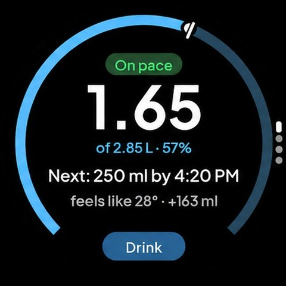
HydroSmart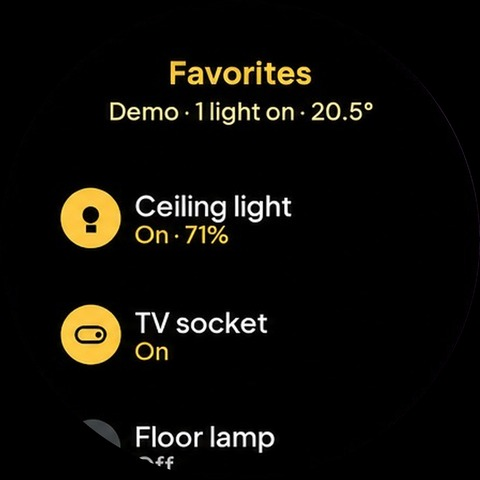
Domora Habitless
Habitless Vagal
Vagal Isobar
Isobar CardVault
CardVault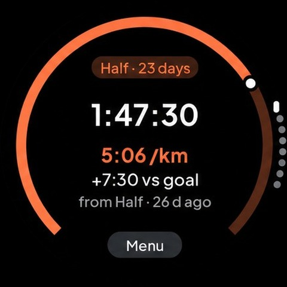
Racecast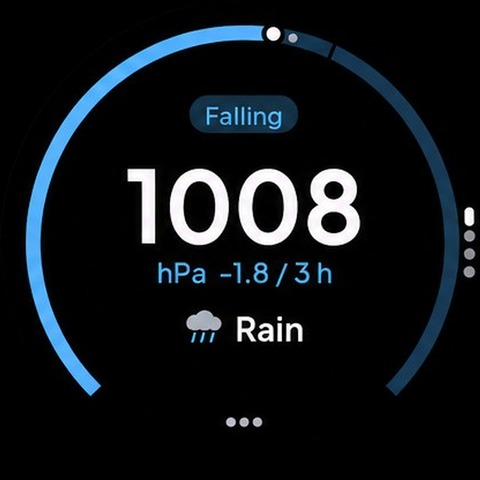
Barocast JetShift
JetShift ShiftPay
ShiftPay Reminders+
Reminders+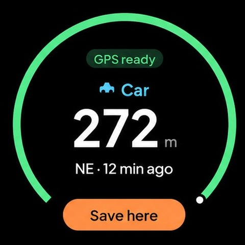
SpotSave AltiZone
AltiZone Spent
Spent Stepwise
Stepwise Anvil
Anvil Coolhour
Coolhour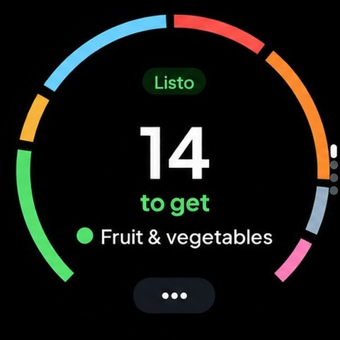
Listo Adapt
Adapt Lastpage
Lastpage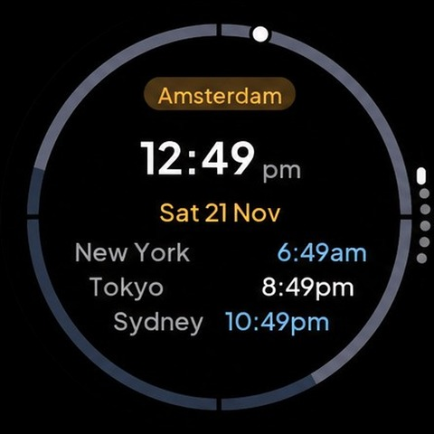
Meridia MorseTap
MorseTap Nappr
Nappr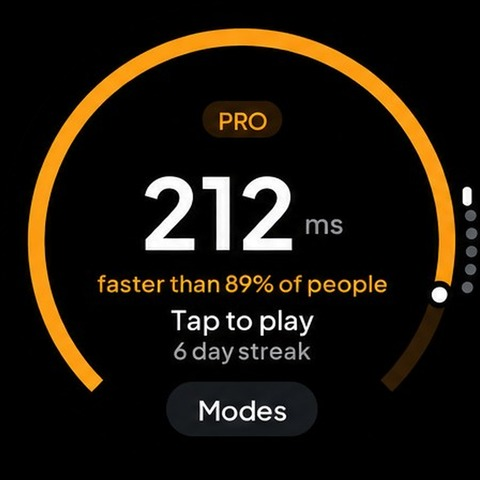
Reactr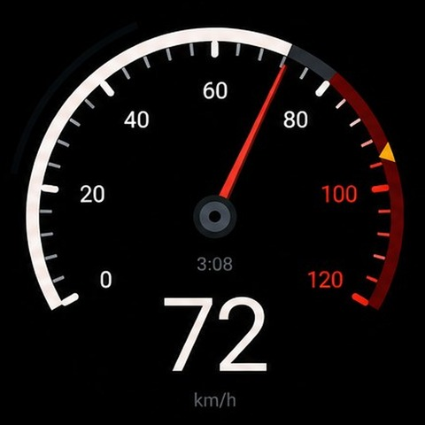
Speedometer Pro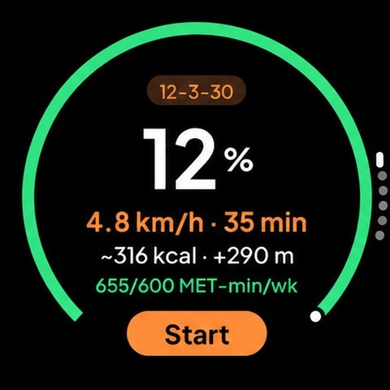
Graded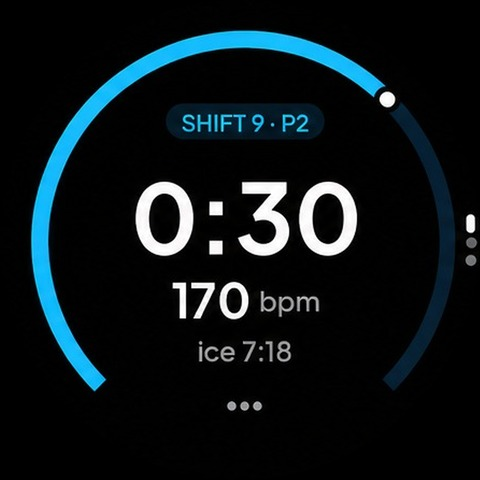
Blueline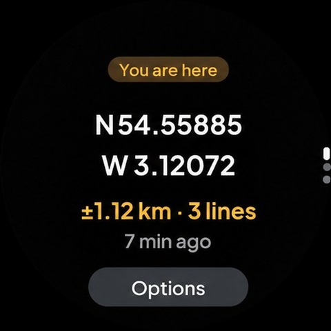
Fixpoint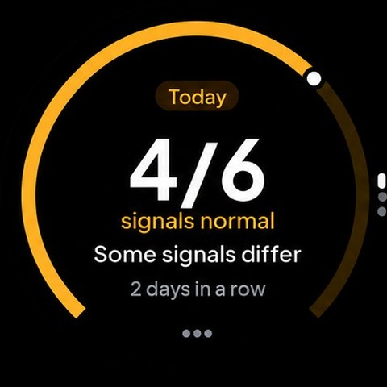
Baseline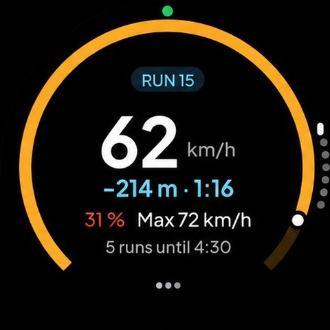
Schuss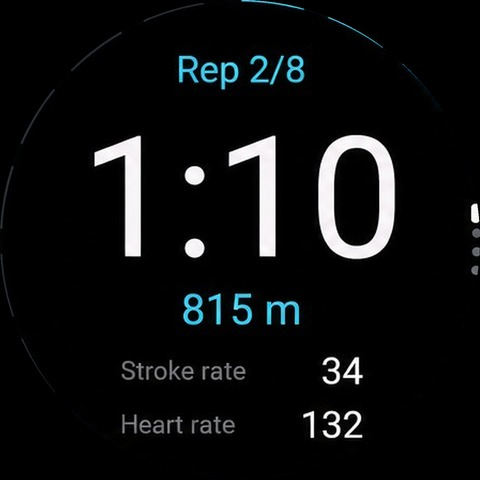
Flume Laddr
Laddr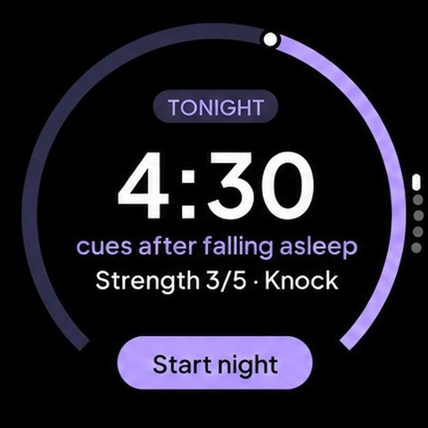
Oneira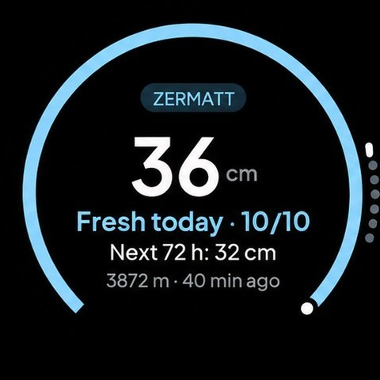
Powcast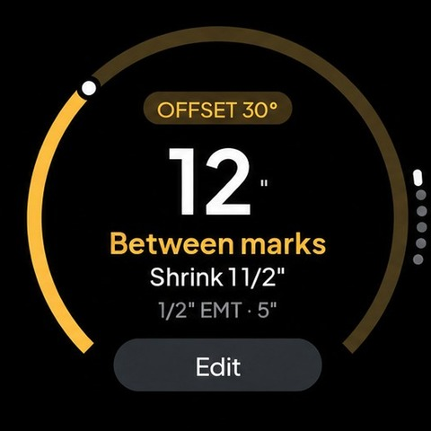
Bender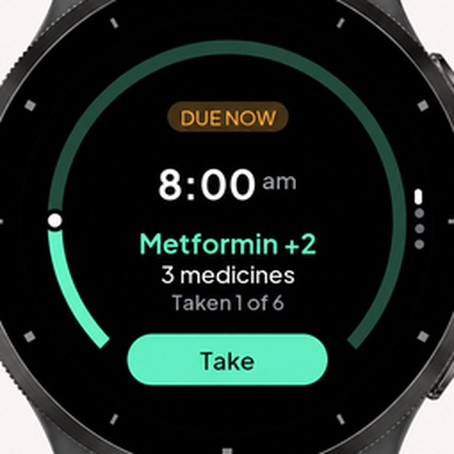
Pillyr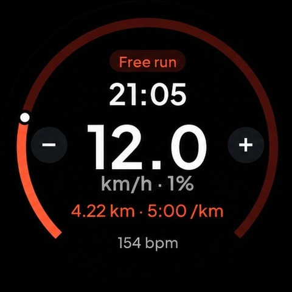
Treadset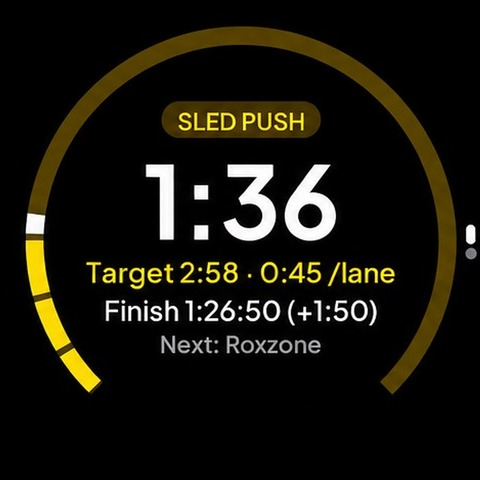
Sledline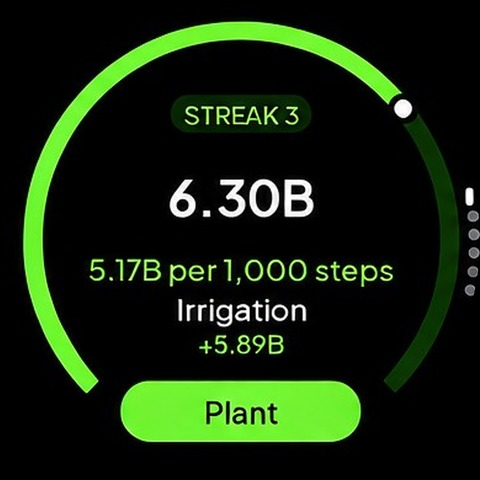
Stepcrop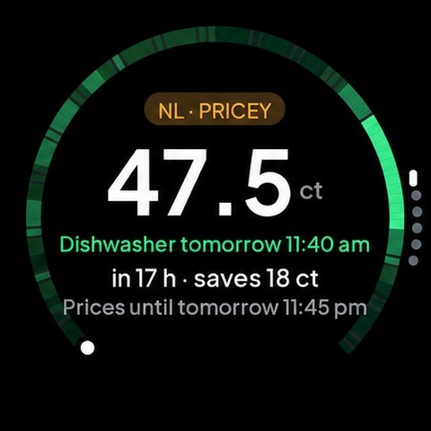
Offpeak